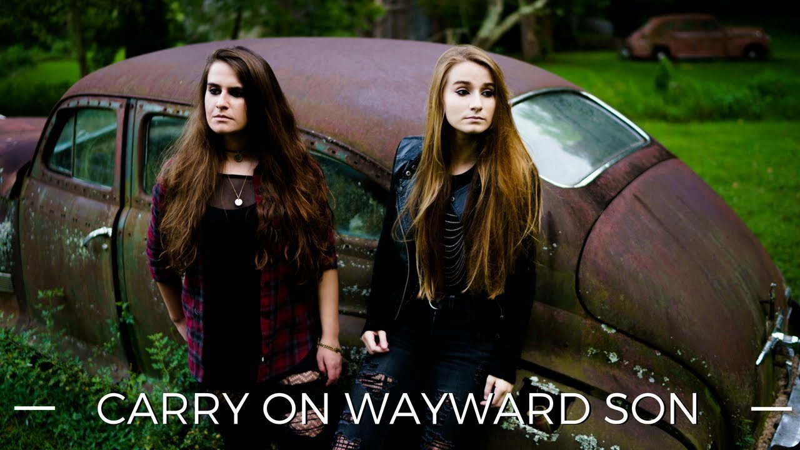

Stimpunks · community board
Norah Hobbs · keeper of this edition
Things We Collected
“Now That's What I Call A Pebble Board” — Summer 2026 remix
On Thursday, 6/25/26, a bunch of us got together for two hours and just vibed — songs, art, jokes, a few things worth keeping. Genuinely one of the good ones. Here's what we brought each other.
Norah HobbsProgram Director, Stimpunks Foundation
Collected 2026-06-25 · pinned up 2026-09-21
What is on the board
Songs
-
Lebanon
J.S. Ondara
Play · 3:27
-
Quasheba, Quasheba
Our Native Daughters
Play · 4:43
-
I Wish I Knew How It Would Feel to Be Free
Nina Simone — Montreux, 1976
Play · 6:13
-
Cure For Me
AURORA
Play · 3:22
-
Born to Fight
Tracy Chapman
Play · 2:43
-
Lighten Up, Morrissey
Sparks
Play · 3:33
-
Good Day
Luce
Play · 4:14
-
Steal My Sunshine
Len
Play · 3:47
-
Inside Out
Eve 6
Play · 3:42
-
Darkside (Acoustic)
NEONI
Play · 2:40
-

Carry On Wayward Son
NEONI, reimagining Kansas
Opens on YouTube · 3:28
Watch on YouTube → -
Here's To The Night
Eve 6
Play · 4:02
-
Here It Goes Again
OK Go — the treadmill video
Play · 3:06
-
Upside Down & Inside Out
OK Go — filmed in zero gravity
Play · 3:22
-
Only Time
Enya
Play · 3:36
-
Dance With Somebody
Chaparelle
Play · 3:33
-
Two Seconds
Laura Cantrell
Play · 3:58
Things We Read
-
About
Mel Baggs — Ballastexistenz
Open it →read more
A foundational voice in Autistic self-advocacy. On being cognitively, physically, developmentally, and psychiatrically disabled, using a communication device, and refusing to be flattened into one story: “every person is different, even a person with a collection of labels identical to mine.”
-
Sigil
Wikipedia
Open it →read more
A little detour into symbol-magic: sigils as condensed intentions, from medieval grimoires to chaos magic to corporate logos. Came up alongside a stash of hand-drawn symmetrical patterns.
-
Focaccia from Overproofed Sourdough
Garden of Mirth
Open it →read more
Mind-blowing fact of the gathering: focaccia is just what happens when sourdough gets away from you. Nothing wasted, just redirected.
-
Now That's What I Call Music!
nowthatsmusic.com
Open it →read more
A wave of shared nostalgia for the compilation CDs a lot of us grew up with — the official home of the series, for anyone who wants to fall down that hallway again.
-
Informed vs. Educated
shared video
read more
Being informed means you know what happened. Being educated means understanding why, who paid for it, and what they needed you to think.
Play · 7:35
-
‘They Want Racial Holy War’
Aaron Bastani & Matt Kennard, Novara Media
A conversation on the U.S./British withdrawal from Afghanistan and what came after.
Play · 1:52:09
Art
-
Untitled Watercolor Spread
Treebeard
read more
A two-page watercolor world in pink, orange, and purple — a cliff-face with a small carved window, a frog peeking out, and a green frog-knight lounging in the corner.
-
Lighting Study
PalePixel
read more
“This is from a while ago but it's something I made to play around with lighting in digital paintings” — a profile split between cool blue and warm red-gold light.
-
Columbo Trace Study
PalePixel
“Trace study of Columbo bc I love him :3”
-
Symmetry Doodle No. 1
PalePixel
One of about a hundred — loose, symmetrical line-doodles made just to see what would happen.
-
Symmetry Doodle No. 2
PalePixel
-
Symmetry Doodle No. 3
PalePixel
-
Symmetry Doodle No. 4
PalePixel
-
The “SJ” Station ID
designed by NewPartingtonPower
Open it →read more
A glossy, VHS-warped “station ID” logo — made with ntsc-rs for the tape-decay effect, and based on the WBIR-TV 1983–1995 logo. A broken heart tucked right between the letters.
Just for Laughs
-
Shoes (Full Version)
Liam Kyle Sullivan
“I got shoes, they're multi-color” — the YouTube classic, in full.
Play · 4:01
Moments
-
Here For All. Here For Good.
Ryan, at Pride of Dripping Springs
Standing by the Pride banner in a truly excellent outfit.
-
Free Mom Hugs
Norah
read more
Norah loved the shirt's message so much, she got it as a flash tattoo that day too — a message worth carrying on her skin, not just her sleeve.
-
Ryan, Norah, & Lacey
Dripping Springs Pride, 2026
The three of them together at the brewery venue.
-
No Rainbow Crosswalk? No Problem.
City of Austin
read more
When the State of Texas threatened Austin over a rainbow crosswalk, the city answered with a louder, prouder mural instead — with drag performers Maxine LaQueen and Simone Riviera showing up for it.
-
The Violet Crown Para-Pet Games
Oct 24, 2026 · Jester King Brewery, Austin
Open it →read more
A celebration of dogs who compete with courage, heart, and a little extra flair — three-legged dogs, blind dogs, cancer survivors, all of them thriving. Participation medals for every Para-Pet.
Notes About Each Other
-
Another Zine, Incoming
NewPartingtonPower
Word around the gathering: another zine is in the works.
-
Best Wifi in the Group
shoutout to NewPartingtonPower
read more
For always having the most reliable connection out of all of us. An underrated form of support swapping.
Seen & Celebrated
-
Seen & Celebrated
The Brighter Days Ahead Foundation, via Ariana Grande
Open it →read more
Stimpunks Foundation was named a grantee of the Seen & Celebrated Fund, tied to the Eternal Sunshine tour's Austin stop. Ariana Grande reshared it herself: “Stimpunks is a mutual aid organization by and for disabled & neurodivergent people that provides educational resources, accessibility tools, and creator grants.” Norah & Chelsea bought hoodies to celebrate.
-
The Brighter Days Ahead Hoodie
worn by Norah & Chelsea
in memory
Om Malik
shared for Ryan afterward, as they were unable to attend the gathering — this is truly important to all of Stimpunks
Read the full tribute →“Without my recently departed friend Om Malik, WordPress arguably wouldn't still exist. Automattic… wouldn't exist. Stimpunks probably wouldn't exist. I sold part of Automattic to fund Stimpunks. We certainly wouldn't have been able to pay staff all these years without Om.”
“When the wealthiest men in tech tried to return to colonialism, Om made the wickedness of their plan plain to the world. His words changed global plans.”
“Be like Om. Remember beyond the mythology. Forgetting is a tool of white supremacy.”
— May his memory be a revolution.
Back issues
Nothing has come down off the board yet. When the next gathering pins a new edition up, this one moves down here and keeps its own page. An empty rack is what a board that has had one edition actually looks like.
What a pebble is
A pebble is anything you bring somebody because it made you think of them. Gentoo penguins do it with stones; we do it with songs, art, poems, quotes, photographs, recipes, and whatever else was in our hands that day. The locution is Amythest Schaber’s and Stimpunks documented it; Helen Edgar wrote it up at Autistic Realms.
We share our soul samefoods. We share our SpIns. We share our fandom. We share artifacts of our constructionism. We share joy, sorrow, anger and pride, the silly and the serious, our truth and our lived experience. We share to remember and we share to forget. We share to cope, and to make a community out of it. This is show-and-tell.
The board rotates when there is a new gathering, not on a clock. Nothing here plays until you press it, and every label says how long it runs before you do.
HOW LOUD DO YOU WANT IT?
Gentle takes the scatter out of the cards and leaves every one of them, and everything written on them, exactly where it was.